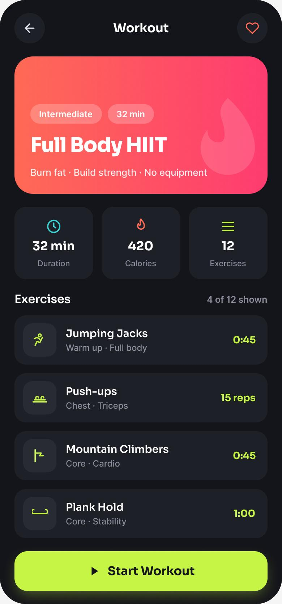

The Problem
Fitness apps are downloaded with good intentions and abandoned within weeks. The barrier isn't features — it's motivation. Data-heavy dashboards feel like homework, and a single missed day triggers guilt that spirals into quitting.
How might we keep people motivated to move every day by making progress feel rewarding — and effortless to track?
Goals & Success Metrics
- ◎Glanceable progressUnderstand today's activity in under 3 seconds.
- ♥Forgiving motivationCelebrate streaks without punishing missed days.
- ⚡Zero-friction startBegin a workout in one tap from the home screen.
Target metrics: ring comprehension > 90% · time-to-start workout < 10s · SUS > 80 · motivation rating ↑.
User Research
Key findings
- 1Visible streaks & rings pull people backSeeing a nearly-closed ring is the single strongest motivator to move.
- 2Guilt causes churn“Failed” days and red warnings make users delete the app. Encouraging, forgiving language keeps them.
- 3Starting is the hard partAny friction before a workout (setup, choices) kills the intent to exercise.
- 4Achievement > competitionPersonal streaks motivate more broadly than leaderboards.
Personas
Rahul Menon
"I have 20 minutes. Just tell me what to do and let me feel like I did something."
- Quick daily wins that fit a busy day
- See streaks build up over time
- Too many taps before a workout
- Overwhelming stats with no meaning
Sana Kapoor
"I've started and stopped so many times — I need encouragement, not another app making me feel bad."
- Build a sustainable, gentle routine
- Feel supported when she misses a day
- Guilt-inducing “you failed” messaging
- Intimidating, athlete-focused apps
User Flow — Start a Workout
Wireframes
Low-fi explored putting glanceable progress first and reducing the workout-detail page to a single decision: start.
Hi-Fi Design & Prototype
Concentric activity rings make progress instantly readable; a forgiving streak celebrates consistency; and the workout page collapses to one confident “Start” action.


Key design decisions
- ◆Concentric ringsMove / Exercise / Stand in one glanceable visual — progress you feel, not read.
- ◆Forgiving streakEncouraging copy and a “rest day” state instead of failure warnings.
- ◆One-tap startA prominent Start button removes friction between intent and action.
Usability Testing
6 participants, moderated remote sessions via Lookback.
Tasks: (1) “How are you doing on today's activity?” (2) “Start the Full Body HIIT workout.”
| Metric | Target | Result |
|---|---|---|
| Ring comprehension | > 90% | 94% |
| Time to start a workout | < 10s | 7s |
| System Usability Scale | > 80 | 88 |
| Motivation rating (1–5) | ↑ | 4.5 |
What testing changed
Two users weren't sure which ring meant what. → Added a colour-coded legend with live values beside the rings.
The Start action competed with the exercise list. → Made “Start Workout” a sticky, high-contrast button anchored to the bottom.
Results & Impact
Reflection & Next Steps
The insight that reframed the project: emotion, not data, drives retention. Designing forgiving, celebratory moments mattered more than adding metrics. Rings worked because they turn progress into a feeling.
Next: adaptive workout suggestions, gentle re-engagement after a break, and optional friend “cheers” for accountability without competition.